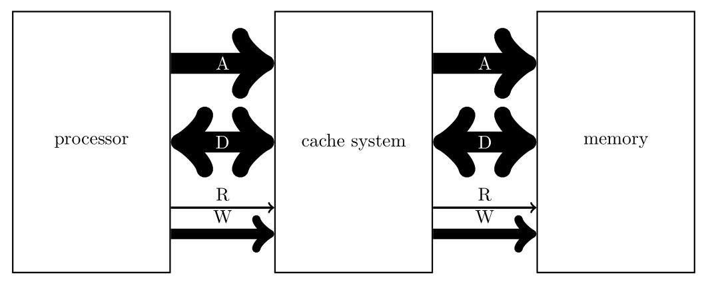
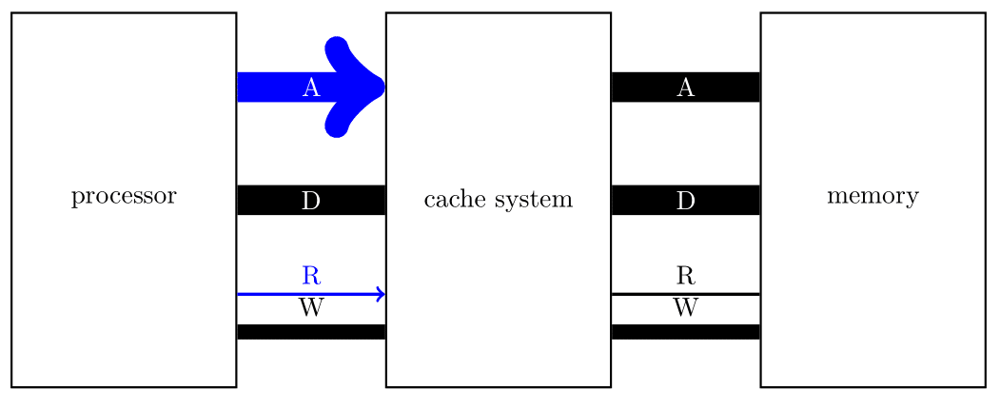
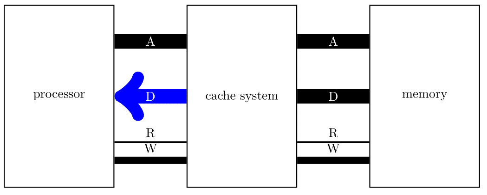
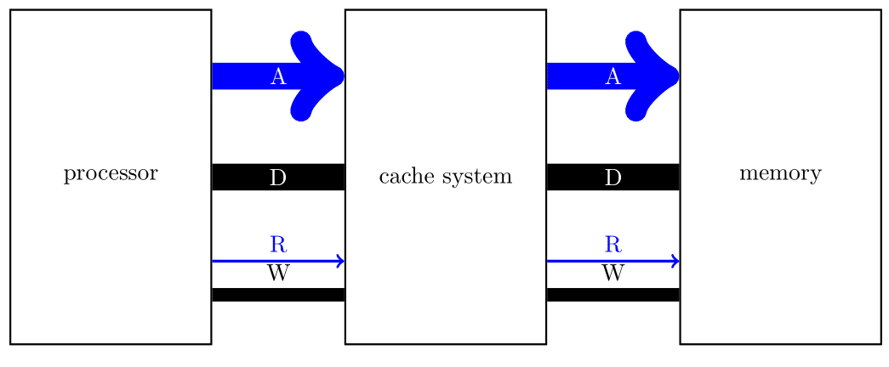
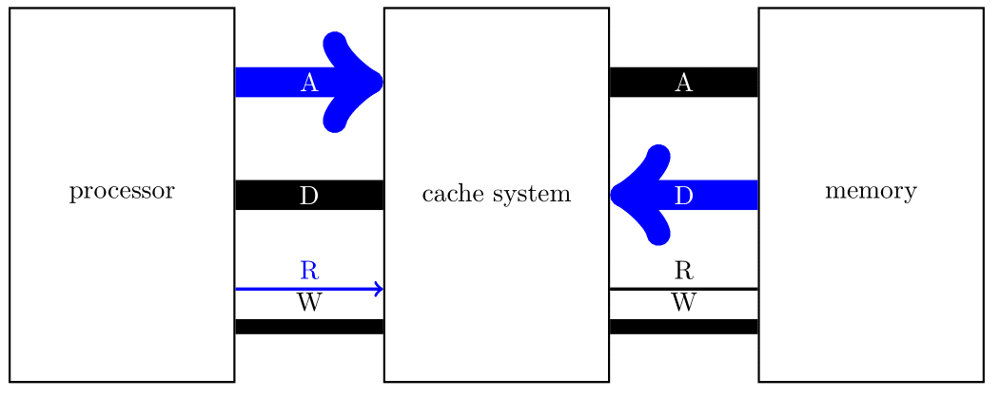
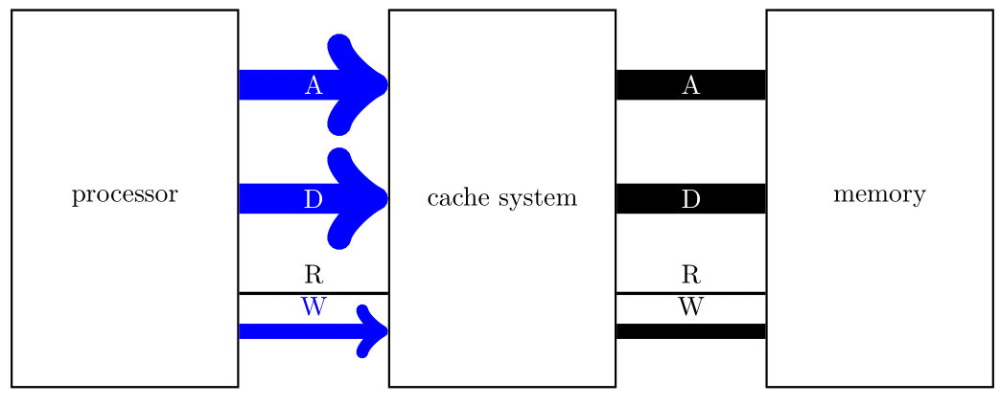
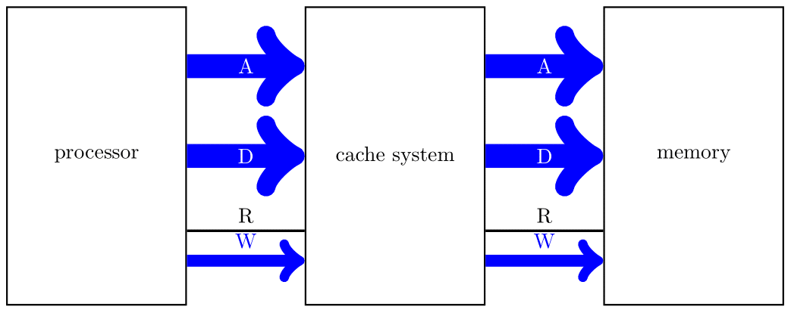
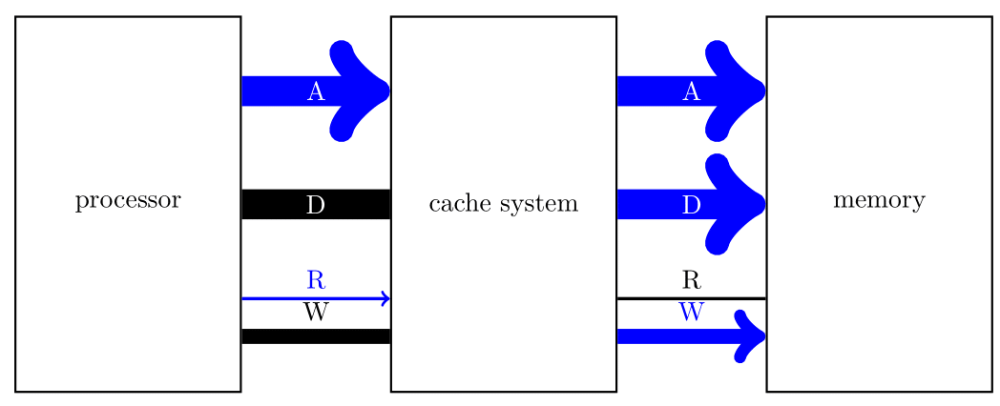
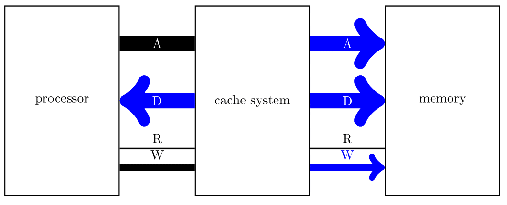

Teaching >>> Past Semesters >>> 2021-2 >>> 2021-2B Intro. to Computer Architecture >>> 2022-08-04 >>> המטמון
המטמון
מטרת המטמון הינה לייצר גישה אפקטיבית לנתונים בזיכרון במהירות גבוהה הרבה יותר מאשר מהירות הזיכרון.
הדרך לבצע זאת היא על-ידי שימוש בזיכרון אסוציאטיבי קטן ביחס לזיכרון הראשי
אך מהיר בהרבה.
במטמון נשים העתקים של מילים פופולריות מהזיכרון הראשי וכך
ניצור מצב בו מהירות הגישה האפקטיבית לזיכרון גבוהה.

קריאה מהזכרון
המעבד יוזם קריאה.
שימו לב שלמעבד אין מושג מי עונה לו.
הוא שם אותות על הבס.
מי שנמצא על הבס עונה.
כיון שכרגע שמנו מערכת מטמון על הבס לפני הזכרון,
אזי המטמון הוא זה שצריך לענות.

במטמון יש זכרון אסוציאטיבי.
המטמון בודק אם הכתובת שניתנה לו בבס
(המפתח מבחינת הזכרון האסוציאטיבי)
נמצאת בזכרון האסוציאטיבי.
אם כן, הוא מחזיר את התוכן למעבד.
זו תגובה במהירות גבוהה ונקראת פגיעה (hit).

אם המפתח לא נמצא בזכרון האסוציאטיבי, המטמון יוזם קריאה לכיוון הזכרון.

הזכרון עונה כהרגלו.
שימו לב שלזכרון אין מושג אם הפניה מגיעה ממטמון או ממעבד.
הוא מגיב לאותות שמגיעים מהבס.

עם קבלת התשובה המטמון עושה שני דברים.
שומר את התשובה בזכרון האסוציאטיבי שלו, ומעביר את התשובה אל המעבד.
המצב הזה נקרא החטאה (miss).
כתובן שתשובה כזו לוקחת יותר זמן מאשר כשהמפתח מלכתחילה היה בזכרון האסוציאטיבי.
התקווה היא שברוב הפעמים הנתון ימצא בזכרון המטמון.
כתיבה לזכרון
בכתיבה יש כמה מנגנונים אפשריים.
יש מערכות מטמון שיש בהן מנגנון מסוג אחד בלבד.
יש מערכות מטמון שיש בהן כמה אפשרויות ומערכת ההפעלה מחליטה איזה
מנגנון להפעיל.
בכל מקרה, הכתיבה מתחילה כרגיל כאשר המעבד יוזם:

Write through
שיטה זו היא הנפוצה ביותר.
היא פשוטה וקלה למימוש.
בשיטה זו כל בקשת כתיבה שמגיעה למטמון מועברת לזכרון הראשי.

במקביל,
אם הכתובת נמצאת בזיכרון המטמון
אזי מתבצע עידכון גם של זכרון המטמון.
כיון שהמטמון מהיר בהרבה מהזכרון הראשי היא יכול, בעיקרון, להודיע למעבד
שהכתיבה הסתיימה עוד לפני שהכתיבה לזכרון הראשי הסתיימה.
איזה יתרון יכול לצמוח מכך שהמטמון יודיע למעבד על סיום הכתיבה לפני שהיא
אכן הסתיימה?
ובכן, במצב האידאלי, שהוא די נפוץ, יש הרבה קריאות יחסית לכתובות.
כלל האצבע הוא משהו כמו 80% קריאות ו-20% כתיבות.
ושוב, במצב האידאלי, הנתון שקוראים נמצא במטמון.
ולכן במצב האידאלי בזמן שהכתיבה לזיכרון הראשי נמשכת המעבד יכול לבצע
קריאות שהמטמון יענה עליהן.
כלומר המעבד יזום קריאה.

ואז המטמון יענה:

יתכנו כמה תנועות קריאה כאלה ואז הכתיבה שמתחוללת במקביל כאילו לא לוקחת זמן!
כמובן שיתכן שהמצב האידאלי לא יתקיים. לדוגמא יש קריאה אבל התשובה אינה במטמון. במצב הז המטמון יאלץ להמתין עש שתסתיים הכתיבה ואז ליזום קריאה לכיוון הזיכרון הראשי.
יתכן כמובן שאחרי כתיבה תגיע עוד כתיבה. ואז על פניו, כמו במקרה הקריאה, המטמון יאלץ לחכות עד שהכתיבה תסתיים. אבל, פה יש דרך לשפר את ההנהגות. למטמון יכול להיות תור של בקשות כתיבה לכיוון הזיכרון הראשי. וכל זמן שיש מקום בתור לבקשות כתיבה, המטמון יודיע למעבד מייד שהבקשה טופלה. בקשת קריאה שתגיע תהיה תמיד אחרונה כיון שהמטמון לא יענה למעבד לפני שתגיע תשובה מהזכרון הראשי.
שימו לב שהמקרה הגרוע יכול להיות ממש גרוע פה. יתכן שיש תור מלא בבקשות כתיבה שצריכות להסתיים לפני שאפשר יהיה לשגר את בקשת הקריאה.
יש מערכות שבהן מותר לשנות את סדר הקריאות והכתיבות אך זה מסוכן ביותר, ובדרך כלל דורש התערבות תוכנה כדי להמנע מתאונות תוכנה קשים.
Write back
שיטה זו קשה יותר למימוש והיא פחות פופולרית. היא דורשת יותר מהזיכרון האסוציאטיבי מאשר ה-write through. בעיקר היא יכולה ליצור חוסר עיקביות לזמן ממושך בין התוכן במטמון לבין התוכן בזכרון מה שבעייתי בסביביות מרובות מעבדים או בסביבות תומכות DMA.
יתרון השיטה הוא כאשר יש עדכונים תכופים של מילת זכרון מסויימת. הרעיון הבסיסי של השיטה הוא כלהלן. כאשר המעבד יוזם כתיבה לנתון שנימצא במטמון, הנתון יעודכן במטמון ולא יעודכן בזכרון הראשי. בשיטה זו, אם יש עדכונים תכופים נחסכות כתיבות לזכרון הראשי.
המכשלה העיקרית שנוספת לנו היא שאי אפשר כעת סתם "לדרוס" מילה מהזכרון האסוציאטיבי. אם מתעורר הצורך לדרוס, אזי, אם המילה הנדרסת עודכנה במטמון, יש להחזיר אותו לזכרון הראשי קודם.